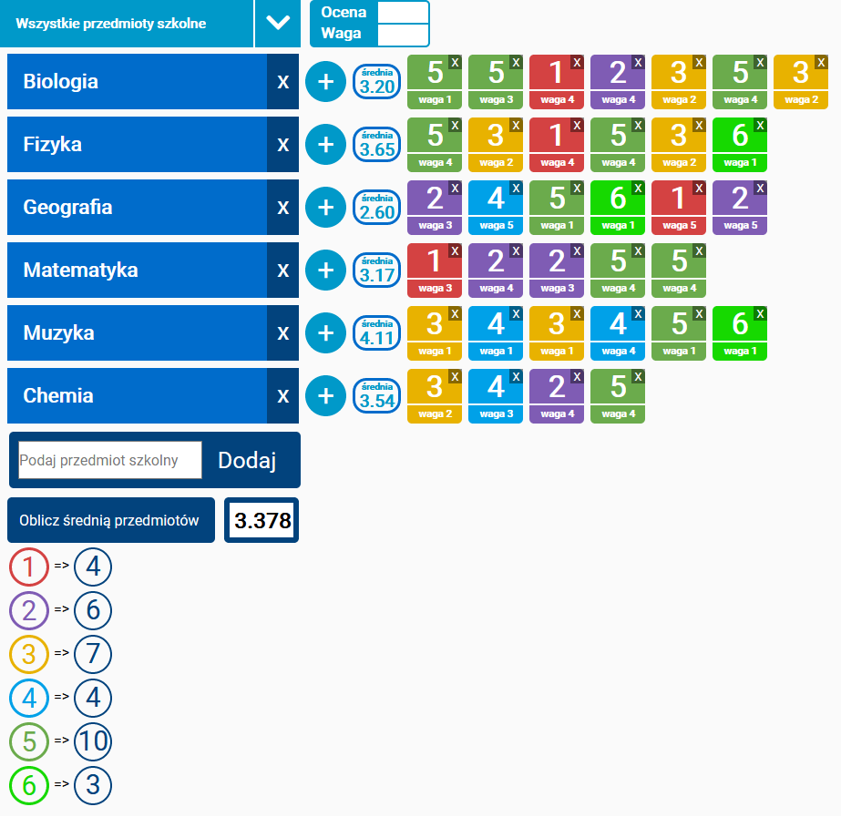
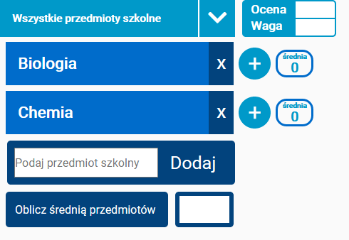

Opis narzędzia
Narzędzie pozwala na liczenie średniej ocen, plusem jest uporządkowanie, co zmniejsza ryzyko pomyłki, i pozwala oszczędzić czas.

Działanie
Po załadowaniu narzędzia należy wpisać przedmiot szkolny. Jeżeli zdarzy się pomyłka, można bezpośrednio go usunąć. Warto pamiętać o opcji - „Wszystkie przedmioty szkolne” by automatycznie dodać wszystkie przedmioty.

Liczenie
Gdy przedmioty będą dodane, należy wpisać ocenę w pole wraz z wagą, by dodać ją do odpowiedniego przedmiotu poprzez wciśnięcie plusa. Ocenę również można usunąć, po czym kalkulator sam obliczy średnią przedmiotu i pokaże ją w polu.

System błędow
Narzędzie nie pozwoli na dodanie przedmiotu bez nazwy, dodania oceny bez wartości, jak i oceny większej niż 6 lub mniejszej niż 1. Bez ocen kalkulator nie obliczy średniej. Jak i usunięcie przedmiotu z ocenami będzie niemożliwe, wymaga to usunięcia pozostałych ocen przypisanych dodanego przedmiotu. W takich sytuacjach narzędzie poinformuje o błędzie.